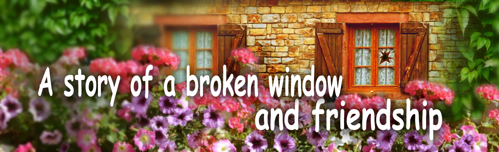

Fairy Tales of Philomur the Cat
faithfully recorded by his devoted admirer — Michel the Rat

A story of a broken window and friendship
Chapter 1 | Chapter 2 | Chapter 3 | Chapter 4 | Chapter 5
Chapter 1. The Mischievous Ball
On a sunny hill, surrounded by geraniums, lavender, and old ash trees, stood a farm lodge with wooden shutters and a bright little bell by the door. Uncle Alex — the farmhand and a true jack-of-all-trades — lived here with his wife, Auntie Paulina, a caring housekeeper and helper.
The farm’s favourite resident was Pippa the dog. Red, with white and black spots, long-eared and endlessly friendly, she greeted everyone with joyful barking and an eager attempt to lick them right on the nose.
Her best friend was Liumy the little fox — a clever trickster and tireless inventor. Together they spent hours chasing a ball along the dusty path near Uncle Alex’s house.
“Catch it, Liumy!” barked Pippa, leaping aside.
“My ball is faster than you today!” laughed Liumy, tossing it up with his tail.
They ran without stopping until the ball suddenly flew straight into a window.
A loud crash — and the glass shattered into tiny pieces.
Silence fell — unusual and unsettling.
“Oh… look… the window… How did that happen?” Pippa breathed.
“What will happen now?..” whispered Liumy.
“Our ball did it…” he said thoughtfully, as if trying to explain the frightening accident.
They froze, staring at the broken glass. There was no one around. Not knowing what to do, they picked up the ball and ran away. Yes, they knew breaking a window was bad. But it was an accident. Neither Pippa nor Liumy wanted any trouble. They hadn’t even had time to understand how it had happened.
The fun vanished. Their mood faded. They wandered away from the lodge and quietly sat beneath an old oak tree. They no longer felt like playing.
Silently, with a stick, they drew strange, incomprehensible symbols in the dirt — as if trying to release their worry somehow.
And so, from one broken window, began a story about how a small accident can lead to a difficult choice — and how important it is to be honest, even when it feels very scary.
Top of the pageChapter 2. Meet Martha the Ballerina Pig
On the farm, where every morning began with cheerful rooster crowing and the scent of freshly cut hay, not only playful animals lived.
Right in the centre of the yard, in a neat pink pigsty with white curtains, lived a pig named Martha. But don’t rush to think she was an ordinary pig! Oh no — Martha was a true ballerina pig!
She danced as if everything around her became a stage:
— “Tra-ta-ta-ta, plié-é-é, ta-ta-ta-ta-taa — oink-oink!” she sang while twirling across the wooden floor in real ballet shoes and a fluffy skirt she had sewn herself from a white ribbon.
Her pointe shoes creaked softly, and the white skirt gently swayed around her as she gracefully spun in front of a large mirror. Her movements were not light — but confident, bright, and filled with an inner fire that made them truly beautiful.
Nearby sat Peter — her kind and shy little piglet — quietly rolling a small ball back and forth, made from a ball of yarn. It was a gift from Sophie the Owl. It gently swayed from side to side, as if keeping time with barely audible music, trying not to disturb her — after all, Mama was absorbed in the great art of dance.
— “Mom, are you dancing “Swan Lake in the Swamp” again”? he asked quietly.
— “The swamp? It’s *Swan Lake*, my dear!” Martha leapt gracefully…
…and plopped right onto a cushion she had thoughtfully placed beforehand.
— “How funny!” giggled Peter.
Martha dreamed of dancing in a duet. Once she performed with Andrew the Ram. But during a pas de deux Andrew tried to lift Martha — and couldn’t hold her. She fell with a loud thump, nearly crushed Andrew, and almost broke the stage floor. Since then Andrew prefers to dance with more graceful partners…
But Martha did not lose heart at all. She said: “Well then! I’m a soloist. I can do it myself!” And ever since, she has performed her favourite solo parts — boldly, artistically, and with a sparkle in her eyes.
Martha straightened her bow, caught her breath, and asked:
— “Do you like it, my dear son? Beautiful, isn’t it?”
— “Yes, Mommy. Very beautiful!” smiled Peter.
He was very proud of his mother — so unusual, brave, and always true to herself.
But only a few minutes later… his smile disappeared.
Top of the page🐷 Chapter 3. An Unfair Accusation
Meanwhile, Uncle Alex returned from fishing. The fish had barely been biting, the catch was modest, and his mood was poor.
Suddenly he noticed the broken window in his cottage. Alex jumped, frowned, and shouted loudly:
— “What is this outrage? Who did this?”
Rolland the earthworm heard the shout and crawled to the surface. He immediately understood that Uncle Alex was extremely upset. Rolland had not seen who broke the window, but he remembered that little Peter the piglet had recently passed by with a small ball — and he told Uncle Alex about it.
Without thinking it through, Alex immediately decided that Peter was guilty. He hurried to the pigsty to see Martha.
— “Your son broke the window in my cottage!” he exclaimed angrily. “You should be raising him instead of spinning in front of the mirror all day lifting your hooves!”
Upset and offended, Martha called Peter.
— “Peter? Did you break the window?” she asked sternly, throwing up her hooves.
— “Me?.. N-no… I didn’t break anything,” squeaked the frightened piglet.
— “But Rolland the worm saw you walking past with a ball,” Uncle Alex said firmly.
— “But I…” Peter tried to explain, but nobody listened.
— “That’s enough!” sighed Martha. “You won’t even admit it! You must have the courage to tell the truth.
— You’re punished: the ball goes into the storage room, no cartoons, and you won’t go to Lily the sheep’s birthday party!”
— “But… Mom…” Peter whispered softly. “When I walked past, the window was whole. And my ball is too small — it couldn’t…”
But Martha was no longer listening. Peter silently went outside. He wandered across the meadow, away from everyone’s eyes, and burst into bitter tears all alone. It hurt him — not so much because of the unfair accusation, but because his mother didn’t believe him. She thought badly of him. And besides her, he had no one.
Peter had no friends: the others often laughed at him and teased him, calling him “Donut” because of his round little belly. Peter thought he was different from everyone else, and that nobody loved him or wanted to be his friend.
Even the ballet school Martha dreamed of sending him to had not accepted him. Perhaps that was for the best. Peter had no desire to dance on stage in front of an audience. He was shy.
But playing with his ball in the meadow — that was true joy. The little ball was his favourite and only toy.
Top of the page🐾 Chapter 4. The Truth Cannot Be Hidden
Pippa and Liumy played a little longer, but the joy had faded. The ball no longer felt fun, their paws drooped, their tails fell still. They searched for an excuse to leave — not because they were tired, but because something inside felt uneasy and wrong.
— Oh, I need to sweep the porch floor, — Pippa suddenly remembered.
— And I… I haven’t done my homework, — Liumy said quietly.
They walked silently side by side, heads lowered — like leaves after rain. Suddenly, around the corner, they saw Peter. He was sitting alone under a bush, crying bitterly. Tears rolled down his round cheeks, and he did not even try to wipe them away.
Pippa and Liumy stopped.
— Peter, what happened? Why are you crying so hard? — asked Pippa, deeply moved.
Peter told them everything. Though — they had already guessed. He had been punished. For something he had not done. And at that moment, both of them felt a painful squeeze in their chests. Their sadness became unbearable, and the shame — heavy, pressing, and sharp. They silently went home. But the event would not leave their thoughts. It stayed inside like a splinter and gave them no peace.
At home, Pippa sat on the porch and thought: “I must tell the truth. I cannot stay silent any longer.” But then she became afraid: “What about Liumy? I cannot betray him.” And then she decided: I will take the blame myself. I will say that I broke the window. Let them punish only me. Any punishment felt easier than this shame for a moment of weakness. And she felt terribly sorry for Peter. How could she ever look him in the eyes?
As she approached the farmer’s cottage, Pippa suddenly saw Liumy. He was standing at the door, ringing the bell.
— Liumy? — she asked in surprise. — What are you doing here?
— Pippa, dear, don’t worry. I decided to confess, — he said calmly. — I will tell Uncle Alex that I broke the window. Not a word about you. Let them punish me.
Pippa smiled softly.
— No, Liumy. We will tell the truth together.
They took each other by the paws and walked into the house. Simply — to tell the truth. Because nothing is better than the truth.
Uncle Alex had already stopped being angry. He had repaired the window, swept the floor, and even cooked potatoes.
When Pippa and Liumy told him everything, he did not scold them. On the contrary — he praised them for their honesty.
— Now that’s a fine deed! — he said. — For telling the truth — there is always a bone.
He gave each of them a gnawed bone — with a meaty aroma and a gentle smile.
Then he hurried to Martha to apologise for his rash accusations. Of course, he brought gifts: a large bundle of fragrant hay, a pink bow with beads for Martha, and a harmonica for Peter.
Liumy and Pippa went with him — to apologise as well. For their thoughtless act. To say how sorry they were. And how deeply they felt for Peter, who had suffered because of them.
Sometimes the truth does not come at once. But when it comes — everything becomes lighter. Even if the window is broken. Even if the ball lies in the storage room. The most important thing is that the heart remains whole.
Top of the page🐷 Chapter 5. A Heart That Knows How to Forgive
When Martha learned the truth, her eyes filled with tears. She realised how unfair she had been to her little son. Her hooves trembled, and her bow slipped to one side.
— What have I done… — she whispered. — How could I hurt my child like this…
Without losing a minute, she hurried to look for Peter. She knew where he might be — in his favourite hiding place, behind the old hay, under an elderberry branch. And indeed — there he was. Sitting there, hugging the little ball to his chest and quietly sobbing.
— Peter… — Martha called, lowering herself beside him.
He raised his tearful eyes and said nothing.
Martha hugged him, stroked him, wiped his cheeks and said:
— Forgive me, my dear. I was wrong. I was unfair to you, and I am very sorry. I love you very much. You are a wonderful son, and I am proud of you. At home, gifts are waiting for you… and new friends.
Peter did not believe it at once. But there was so much warmth in her voice that his heart melted. He nodded quietly and went home with his mother.
At home, his ball was waiting — his beloved little yellow ball. And a big colourful picture book that Martha had planned to give him for his birthday.
And also waiting there were Pippa and Liumy. They came up to him, shy but sincere.
— Peter, forgive us, — said Pippa. — We didn’t want things to turn out like this.
— We are very sorry, — added Liumy. — And… we would like to be your friends.
He rummaged in his pocket, took out a small wind-up toy car — his most favourite toy — and handed it to Peter.
— It’s yours now. Because you are our friend.
Peter took the little car, hugged it and smiled.
— Thank you… — he whispered.
And Uncle Alex came up, clearing his throat slightly, holding a harmonica.
— I was wrong too, Peter. Forgive me. Here — a gift. And I will teach you how to play it.
He showed him how to make the first sounds — soft and silvery, like the wind in the grass.
From that day on, Pippa, Liumy and Peter became inseparable friends. They played together, composed melodies, built huts and organised races.
No one teased Peter anymore. Because now he had friends who would always stand up for him. And most importantly — he knew he was loved, simply for being himself.
And if someone ever broke a window, lost a toy or forgot their homework — they would find a way out together. Because truth, friendship and forgiveness are what make a heart truly whole.
The End
Top of the page
🌟 Questions and tasks for the young reader
1. What is this chapter about? Tell the story in 3–5 sentences.
2. Who is the main character in this chapter? Describe them: appearance, personality, and mood.
3. Choose one scene you remember best. Draw it, and add small details you think are important.
4. If you could ask the main character one question, what would it be? Write it down — and try to answer it as the character.